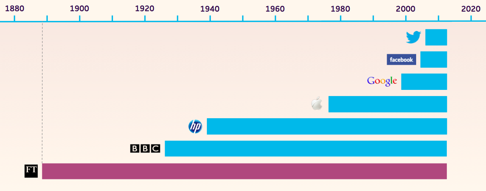
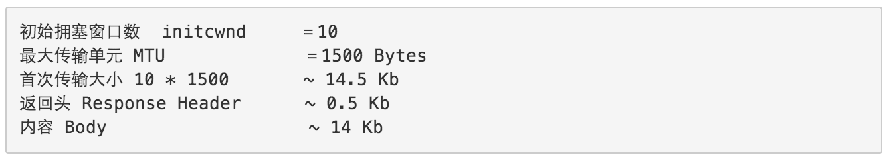
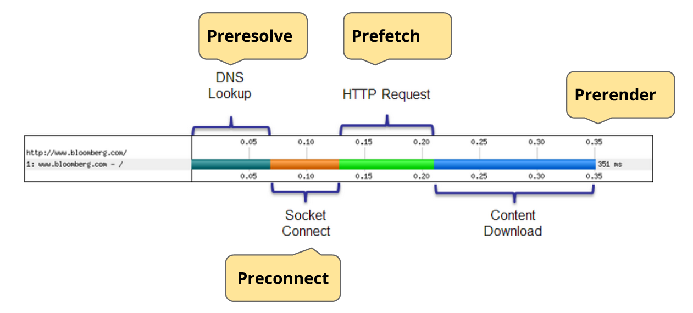

Mobile Web
性能和组件化
@鬼道 @铁军
天猫前端
分享范围
- 《让 WebApp 如 Native 般顺滑》 Andrew Betts @英国金融时报
- 《Introducing Origami》 Andrew Betts @英国金融时报
- 《构建高可用移动Web应用》 曹元彦 @阿里巴巴
- 《移动时代技术与设计的十字路口》蒙晨、杨扬 @豆瓣
- 《跨端组件实践》王集鹄 @百度
- 《大型前端应用的组件与模块》徐飞 @易购
英国金融时报

Smooth transitions
No pauses
Matching expectations
（满足期望）
Network
HTTP requests are painful, so do fewer of them and make them count.
（HTTP 请求很痛苦, 所以减少请求并善用他们。）

《构建高可用移动Web应用》


基于 TCP 的优化
- 让延迟数量变少；
- 复用连接避免三次握手；
- 控制首屏14KB以内，减弱慢启动。
为什么是14KB？

The basics
- Async everything:
deferandasyncon script tags - Even async scripts can block the load event:
Start loading your scripts after onload - Reduce HTTP requests with spriting and script concatenation
Batching
- Aggressive batching - collect requests asynchronously:
api.add('getStory', {'path': '/1'}, callback1); api.add('getStory', {'path': '/1'}, callback2); api.send(callback3); api.add('healthcheck', params, callback4); api.send(callback5); - Callbacks per action and per group
- Process queues in the background
HTTP 2.0 / SPDY
- Makes this unnecessary – in theory, but:
- Not usable yet
- Can't optimise cross-origin (third party scripts)
- Also see W3C Beacon API for analytics
- Still use cases for delayed requests:
- Offline persistence of queued requests
Prefetch and friends
Prefetch and friends
Pre-resolve DNS hostnames for assets later in the page:
<link rel='dns-prefetch' href='hostname-to-resolve.com'>
Fetch subresources early so they're already there when needed:
<link rel='subresource' href='/path/to/some/script.js'>
Pre-fetch resources for likely future navgiations:
<link rel='prefetch' href='/most/likely/next/page.html'>
Pre-render an entire page in the background (Chrome only)
<link rel='prerender' href='/overwhelmingly/likely/next/page.html'>
Rendering
Layout, paints, animation frames and 'jank' coming up.
Frame rates
Activate meter in chrome://flags

No border-radius

Border-radius
Layout boundary
The area the browser has to re-layout when you change something

For more info see Wilson Page's post or Boundarizr by Paul Lewis.
Layout boundary (fixed)

Layout 'thrashing'
- DOM operations are synchronous but 'lazy' by default
- Browser will batch writes for you
- But you force it to write if you try to read something
Asynchronous DOM?
Use Wilson's FastDOM library to get asynchronous DOM today.
fastdom.read(function() {
var h1 = element1.clientHeight;
fastdom.write(function() {
element1.style.height = (h1 * 2) + 'px';
});
});
fastdom.read(function() {
var h2 = element2.clientHeight;
fastdom.write(function() {
element2.style.height = (h1 * 2) + 'px';
});
});
This works by using requestAnimationFrame to batch writes
Live demo (ooo err)
Hardware accelerated transforms
You need the GPU if you're going to animate a
move, scale
filter, rotate
Using accelerated animations
- Repositioning elements causes a relayout
- Accelerated animation = paint only
- First: move element to GPU layer
.thing { -webkit-transform: translateZ(0); } - Then: apply a transition or animation
.thing { -webkit-transition: all 3s ease-out; } .thing.left { -webkit-transform: translate3D(0px,0,0); } .thing.right { -webkit-transform: translate3D(600px,0,0); }

Storing data
HTML5 can store data on device too, it's just... well, it's complicated.
A
happy
family of technologies
- WebSQL
- IndexedDB
- localStorage (and sessionStorage)
- Cookies
- HTML5 Application Cache
- FileAPI
Cookies
Grandad
localStorage
Dad
IndexedDB
Mum

AppCache
Teen

Files API
Imaginary
friend
localStorage vs IndexedDB

Click delay
More click, less wait.
Fastclick
- github.com/ftlabs/fastclick
- Removes 300ms delay on touch
- Programmatic clicks aren't quite the same - we handle it where we can (eg apply focus)
Live demo (ooo err)
Unenhanced
With fastclick
Note: This demo shows the effect of Fastclick without using Fastclick itself
组件化
@铁军Thanks.
@鬼道 @铁军天猫前端